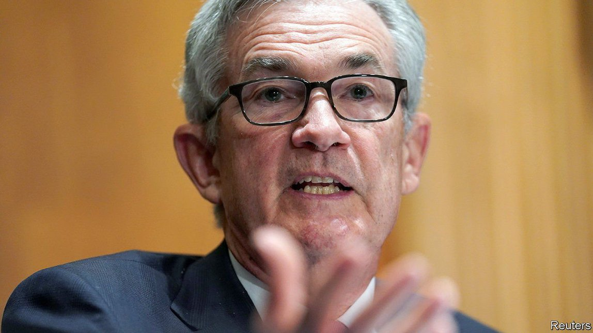

2021-09-06T03:55:21+00:00
The Powell punt
【首文】押注鲍威尔
【首文】押注鮑威爾
Despite his shortcomings, Jerome Powell should be reappointed Fed chairman
尽管表现有不足，鲍威尔应留任
儘管表現有不足，鮑威爾應留任
It would be a bad time to cast any doubt on the Fed’s independence
现在尤其不宜引发对美联储独立性的怀疑
現在尤其不宜引發對美聯儲獨立性的懷疑

WHEN NOMINATING the chairman of the Federal Reserve, America’s president picks the person who wields the greatest immediate power over the global economy. Fed leadership brings with it control over American interest rates, responsibility for an $8.3trn balance-sheet and the obligation to regulate the world’s most important banks. A mistake in the Eccles building can throw millions out of work, roil global markets or unleash inflation. The Fed even props up offshore financial markets by offering foreign central banks a ready supply of dollars.
美国总统提名美联储主席时，就是在挑选一个能对全球经济施加最大直接影响力的人。领导美联储就意味着掌控美国利率，担负起8.3万亿美元的资产负债表，负责监管世界上最重要的银行。埃克尔斯大楼稍有失误，就可能导致数以百万计的人失业，搅动全球市场，或者引发通胀。通过随时向外国央行供应美元，美联储甚至还支撑着离岸金融市场。
美國總統提名美聯儲主席時，就是在挑選一個能對全球經濟施加最大直接影響力的人。領導美聯儲就意味着掌控美國利率，擔負起8.3萬億美元的資產負債表，負責監管世界上最重要的銀行。埃克爾斯大樓稍有失誤，就可能導致數以百萬計的人失業，攪動全球市場，或者引發通脹。通過隨時向外國央行供應美元，美聯儲甚至還支撐着離岸金融市場。
The fate of Jerome Powell, the incumbent chairman whose term expires in February, lies in President Joe Biden’s hands. It is unclear how history will view Mr Powell’s first term. Before the pandemic, his loose monetary policy helped unemployment reach historic lows without provoking inflation. When the economy locked down in the spring of 2020, the Fed prevented a collapse of financial markets with enormous and swift interventions, some of which, such as the implicit underwriting of the corporate-bond market, were unprecedented. In August 2020 the central bank fine-tuned its 2% inflation target, which it had hitherto mostly undershot, by making it apply on average over the economic cycle, meaning that the Fed would have to compensate for its past misses.
现任主席杰罗姆·鲍威尔（Jerome Powell）的任期将于明年2月到期，他的命运掌握在美国总统拜登的手中。鲍威尔首个任期的功过还难以评说。在疫情之前，他的宽松货币政策在没有引发通胀的情况下让失业率降至历史低点。2020年春季因疫情实施封锁措施时，美联储大规模的果断干预使金融市场免于崩溃，其中一些举措堪称前所未见，例如对企业债券市场的隐性兜底。2020年8月，美联储微调了2%的通胀目标——此前大部分时间的通胀都低于这个水平——把它变成一段经济周期内的平均目标，这意味着美联储将必须对过去低于目标的部分做出补偿。
現任主席傑羅姆·鮑威爾（Jerome Powell）的任期將於明年2月到期，他的命運掌握在美國總統拜登的手中。鮑威爾首個任期的功過還難以評說。在疫情之前，他的寬鬆貨幣政策在沒有引發通脹的情況下讓失業率降至歷史低點。2020年春季因疫情實施封鎖措施時，美聯儲大規模的果斷干預使金融市場免於崩潰，其中一些舉措堪稱前所未見，例如對企業債券市場的隱性兜底。2020年8月，美聯儲微調了2%的通脹目標——此前大部分時間的通脹都低於這個水平——把它變成一段經濟周期內的平均目標，這意味着美聯儲將必須對過去低於目標的部分做出補償。
Recently, though, Mr Powell’s hand has looked less steady. By the measure the Fed targets, inflation has surged to 4% on a year earlier, or 6.4% if you annualise quarter-to-quarter price increases. The central bank’s failure to foresee rising prices has made its promises that inflation will subside less reassuring. The Fed could yet be forced into an abrupt reversal of stimulus.
不过鲍威尔近期的表现似乎没有那么让人放心。根据美联储确定的指标，通胀相比去年同期已经飙升至4%，如果按季度环比价格涨幅年化计算，通胀已达6.4%。美联储没能预见这轮价格上涨，这让它做出的有关通胀将会回落的保证难以让人安心。美联储仍有可能被迫突然逆转刺激政策。
不過鮑威爾近期的表現似乎沒有那麼讓人放心。根據美聯儲確定的指標，通脹相比去年同期已經飆升至4%，如果按季度環比價格漲幅年化計算，通脹已達6.4%。美聯儲沒能預見這輪價格上漲，這讓它做出的有關通脹將會回落的保證難以讓人安心。美聯儲仍有可能被迫突然逆轉刺激政策。
In addition, the new inflation target, though desirable in theory, remains vague and poorly understood in practice. And the central bank is persisting with $120bn per month of quantitative easing (QE), the buying of bonds with newly created money. Today’s QE is unlikely to benefit the economy directly, but it creates hidden financial risks for taxpayers, because it involves the Fed, which they underwrite, issuing short-term reserves to buy long-term bonds. If short-term rates rise, the interest bill the Fed must pay on those reserves will soar.
此外，尽管新的通胀目标在理论上是可取的，但在实践中仍然含混不清，不易理解。同时，美联储仍在坚持实施每月1200亿美元的量化宽松（QE，即用新发行的货币购买债券）。如今QE已经难以直接惠及经济，还为纳税人带来了潜在的财务风险，因为美联储实际上是发行短期储备金来购买长期债券，而纳税人最终要为美联储兜底。如果短期利率上升，美联储为这些储备金支付的利息将大幅增加。
此外，儘管新的通脹目標在理論上是可取的，但在實踐中仍然含混不清，不易理解。同時，美聯儲仍在堅持實施每月1200億美元的量化寬鬆（QE，即用新發行的貨幣購買債券）。如今QE已經難以直接惠及經濟，還為納稅人帶來了潛在的財務風險，因為美聯儲實際上是發行短期儲備金來購買長期債券，而納稅人最終要為美聯儲兜底。如果短期利率上升，美聯儲為這些儲備金支付的利息將大幅增加。
Despite this mixed record, Mr Biden should reappoint Mr Powell. That is partly because any replacement the White House is likely to consider would probably be even keener on prolonging QE, and may also be sceptical of the welcome tidy-up of bank regulations that Mr Powell has also presided over. (The leading such candidate is Lael Brainard, a Fed governor.) But the most important reason to keep Mr Powell in his job is that this would be a terrible moment to give the impression that the White House wants to influence the Fed.
尽管鲍威尔的表现好坏参半，拜登应该让他留任。原因之一是，白宫有可能考虑的任何替换人选都可能更加热衷延长量化宽松，也可能会质疑受到欢迎的银行监管调整——鲍威尔已在主持实施这方面的工作。目前呼声较高的人选是美联储理事莱尔·布雷纳德（Lael Brainard）。但让鲍威尔留任的最重要原因是，在现在这个时刻尤其不宜给人留下白宫意图干预美联储的印象。
儘管鮑威爾的表現好壞參半，拜登應該讓他留任。原因之一是，白宮有可能考慮的任何替換人選都可能更加熱衷延長量化寬鬆，也可能會質疑受到歡迎的銀行監管調整——鮑威爾已在主持實施這方面的工作。目前呼聲較高的人選是美聯儲理事萊爾·布雷納德（Lael Brainard）。但讓鮑威爾留任的最重要原因是，在現在這個時刻尤其不宜給人留下白宮意圖干預美聯儲的印象。
In the short term, the danger is that high inflation proves stubbornly persistent. With Mr Powell in charge, that would look like an honest mistake, one that his record suggests he would try to correct quickly. In 2018 the Fed raised rates as the economy heated up; in June it signalled that it would respond to higher inflation with tighter monetary policy, a plan markets took to be credible. However, with a Biden appointee at the helm, chosen primarily for his or her fondness for stimulus, the Fed might look insufficiently independent and thus have to raise rates more—and thus slow the economy more—to convince investors that it was determined to contain inflation.
短期危险是通胀到头来居高不下。在鲍威尔执掌之下，这看起来更像是一个无心之失，而他的履历也表明他会努力迅速纠正它。2018年经济升温之际，美联储实施了加息；今年6月，美联储发出信号将收紧货币政策来应对通胀上升，该计划也得到了市场的认同。不过，如果只是因为某个人选偏爱刺激政策，拜登就委任其掌舵，可能就会让美联储看起来不够独立，那么为了让投资者相信美联储遏制通胀的决心，就不得不进一步加息，进而导致经济进一步放缓。
短期危險是通脹到頭來居高不下。在鮑威爾執掌之下，這看起來更像是一個無心之失，而他的履歷也表明他會努力迅速糾正它。2018年經濟升溫之際，美聯儲實施了加息；今年6月，美聯儲發出信號將收緊貨幣政策來應對通脹上升，該計劃也得到了市場的認同。不過，如果只是因為某個人選偏愛刺激政策，拜登就委任其掌舵，可能就會讓美聯儲看起來不夠獨立，那麼為了讓投資者相信美聯儲遏制通脹的決心，就不得不進一步加息，進而導致經濟進一步放緩。
In the long term, the economic environment threatens central banks’ independence. As interest rates have fallen close to zero, they have been left short of ammunition. QE, central banks’ main alternative to cutting rates, is easily mistaken for the monetary financing of government deficits. Their armoury needs restocking and the division of responsibilities between central banks and government fiscal policy needs rethinking. Politicians and wonks must also co-operate to study central-bank digital currencies (CBDCs), which have the potential to transform how money and banking work. Decisions about CBDCs should be taken by elected leaders, but independent advice from technocrats will be crucial. A new appointment risks fuelling suspicions that all these reforms will politicise central banking.
长远而言，各国央行的独立性在当前经济环境中均受到挑战。利率已接近于零，央行已经弹药不足。既然无法减息，QE就成为央行选择的主要工具，但它很容易被误解为向政府赤字提供货币融资。央行需要重新补充弹药，而央行和政府财政政策之间的责任划分也需要重新考量。政客和专家还必须合作研究央行数字货币（CBDC），它很有可能改变货币和银行的运作方式。对CBDC的决策自然要由民选领导人做出，但技术官僚的独立建议至关重要。现在重新任命一位美联储主席可能会加剧人们猜疑所有这些改革都将使央行的运作政治化。
長遠而言，各國央行的獨立性在當前經濟環境中均受到挑戰。利率已接近於零，央行已經彈藥不足。既然無法減息，QE就成為央行選擇的主要工具，但它很容易被誤解為向政府赤字提供貨幣融資。央行需要重新補充彈藥，而央行和政府財政政策之間的責任劃分也需要重新考量。政客和專家還必須合作研究央行數字貨幣（CBDC），它很有可能改變貨幣和銀行的運作方式。對CBDC的決策自然要由民選領導人做出，但技術官僚的獨立建議至關重要。現在重新任命一位美聯儲主席可能會加劇人們猜疑所有這些改革都將使央行的運作政治化。
Church and state
各司其职
各司其職
Mr Powell got his job four years ago because Donald Trump threw out a precedent, intact since the 1970s, that presidents should reappoint Fed bosses chosen by their predecessors, even those from opposing parties. Mr Biden would do well to reassert that principle, and thereby send the message that the executive branch respects the Fed’s independence. ■
鲍威尔之所以在四年前得以上任，是因为特朗普摒弃了自70年代以来从未被打破的一个惯例，即总统应该继续任命前总统（即使来自反对党）所委任的美联储主席。拜登最好恢复这一原则，从而释放出行政部门尊重美联储独立性的讯息。
鮑威爾之所以在四年前得以上任，是因為特朗普摒棄了自70年代以來從未被打破的一個慣例，即總統應該繼續任命前總統（即使來自反對黨）所委任的美聯儲主席。拜登最好恢復這一原則，從而釋放出行政部門尊重美聯儲獨立性的訊息。